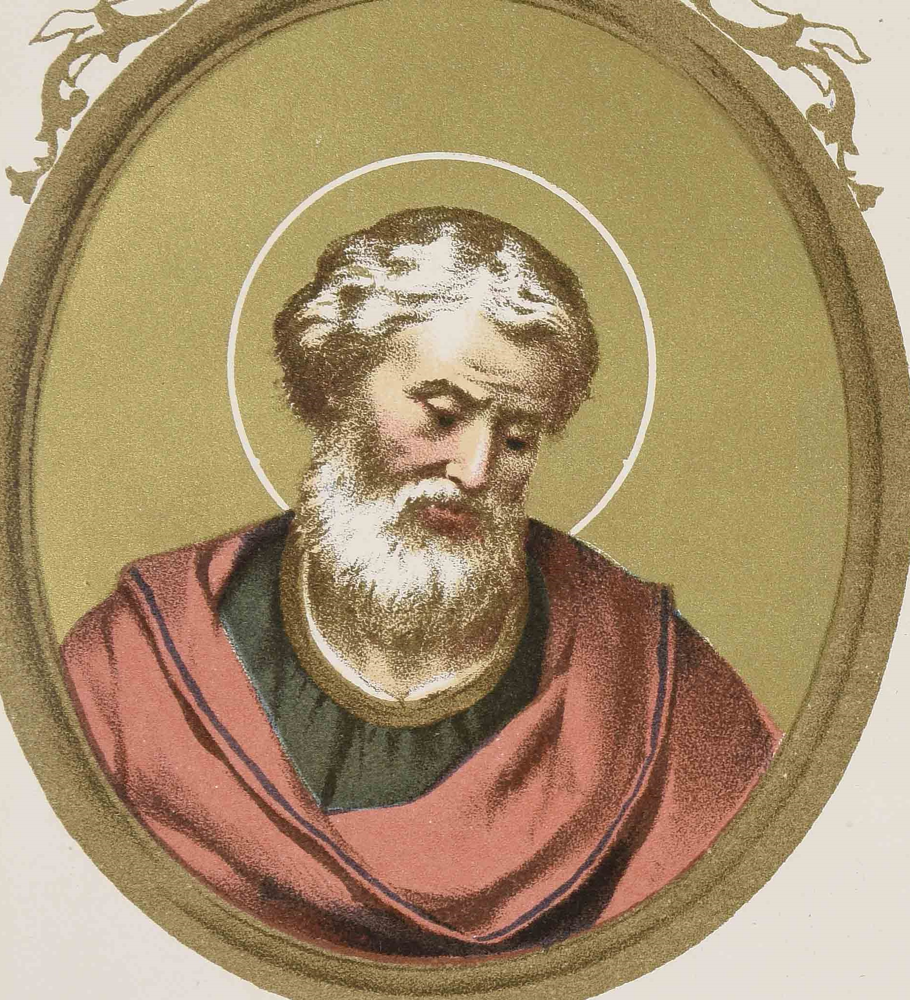

St. Anicetus
The Roman Pontiff who succeeded Pius towards the year 157, and reigned till about 168. According to Duchesne (Origins) the confusion of dates about this period is such that more exact verification is impossible. While Anicetus was Pope, St. Polycarp, then in extreme old age, came to confer with him (160-162) about the Paschal controversy; Polycarp and others in the East celebrating the feast on the fourteenth of the month of Nisan, no matter on what day of the week it fell; whereas in Rome it was always observed on Sunday, and the day of the Lord's death on Friday. The matter was discussed but nothing was decided. According to Eusebius: "Polycarp could not persuade the Pope, nor the Pope, Polycarp. The controversy was not ended but the bonds of charity were not broken"; the Pope permitting the aged saint to celebrate on the day he had been accustomed to in the Church of Smyrna.
Hegesippus, the first Christian historian whose writings are of great value, because he lived so near the time of the Apostles, also came to Rome at this time. His visit is recorded by most ecclesiastical authors as noteworthy, inasmuch as it calls attention to the fact that many illustrious men repaired to Rome at that period, thus emphasizing very early the supreme dignity and authority of the Roman Pontiffs. Marcion, Marcellinus, Valentine, and Cordo were also at Rome, disturbing the Church by their Manichæism. Anicetus suffered martyrdom in 161, but the dates vary between 16, 17, and 20 April.
Acta SS., 11 April; BUTLER, Lives of the Saints, 17 April; MICHAUD, Biog. Univ.; JUNGMANN, Dissert. Hist. Eccl.; MOBERLY in Dict. Christ. Biogr.
Campbell, T. (1907). Pope St. Anicetus. In The Catholic Encyclopedia. New York: Robert Appleton Company. Retrieved April 26, 2010 from New Advent: http://www.newadvent.org/cathen/01514a.htm